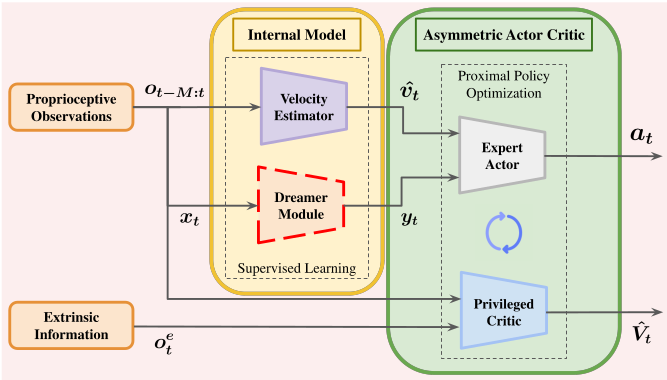

The full implementation is open-source:

The TL;DR
Last year, researchers from Stochastic Robotics Lab, IISc Bangalore, published a fascinating paper at ICRA 2025 titled PIP-Loco: A Proprioceptive Infinite Horizon Planning Framework for Quadrupedal Robot Locomotion. It proposed embedding the predictive foresight of Model Predictive Control directly into a reactive Reinforcement Learning policy using an internal world model, for the blind locomotion of a quadruped.
I read it, thought the architecture was brilliant, and immediately went hunting for the GitHub repository.
Result: No code online.
So, I decided to build it myself. I engineered the complete PIP-Loco framework from the ground up in the Genesis Simulation Engine. I trained the full blind locomotion policy on my laptop's GPU (RTX 3050 Ti) in about 4 hours of training time. The resulting policy enables the robot dog to walk, turn, and recover from violent pushes - all without seeing the ground or knowing its actual body velocity.
No motion capture. No LiDAR. No leg odometry. Just raw joint encoders and an IMU.
Why This Matters
There's this classic tension in robotics:
MPC folks say: "We need accurate models and state estimation! How else can we plan optimal trajectories?"
RL folks say: "Just throw a neural network at it. End-to-end learning handles everything. Magic!"
Both are right. Both are wrong.
MPC gives you interpretable, predictable behavior - but it chokes when your state estimate is bad.
RL learns robust policies - but reactive policies can't plan ahead.
PIP-Loco says: why not both? Train an RL policy that also learns to imagine the future. That's the core idea.
The Setup: Lying to the Actor
Here's the trick that makes this work: asymmetric actor-critic.
During training, I have access to everything — true velocity, friction coefficients, terrain heights, external forces. It's a simulator, after all.
But the robot won't have any of that in the real world.
So:
- The Actor (the policy that actually runs on the robot) only sees what a real robot would see: joint positions, joint velocities, IMU data, and commanded velocities. That's a 45-dimensional vector - I will call these the 'blind' observations.
- The Critic (the value function, only used during training) gets a 250-dimensional privileged state vector, filled with all the simulator data - I will call these the 'privileged' observations.
The critic basically has the answer key. It knows the true velocity, the friction, the terrain heights, everything. This makes value estimation way more accurate, which speeds up learning — but the actor never sees any of it.
Actor input (45 dims):
| What | Dims |
|---|---|
| Angular velocity (gyro) | 3 |
| Gravity direction | 3 |
| Velocity commands | 3 |
| Joint positions | 12 |
| Joint velocities | 12 |
| Last actions | 12 |
The actor gets velocity estimates from a learned estimator and dreams from a world model - these two models constitute what is called the internal model.
The Velocity Problem
Okay, so the actor needs to track velocity commands. But how does it know how fast it is going?
Option 1: Leg odometry. Count how fast the legs are moving, assume the feet aren't slipping, integrate. Works great on carpet. Falls apart on tile, ice, or any surface where feet actually slip.
Option 2: Learn the patterns.
I trained a Temporal Convolutional Network (TCN) to predict body velocity from the last 50 timesteps of observations. No kinematic assumptions. No slip models. Just: "here's what the robot's joint encoders and IMU returned for the last one second, what linear body velocity does that correspond to?"
$$ \hat{v} = f_{\text{TCN}}(o_{t-50:t}) $$
The architecture is pretty standard:
- 3 conv layers (kernel size 3)
- Channels: 45 → 128 → 64 → 32
- BatchNorm after each conv (this is important—more below)
- MLP head: flatten → 128 → 3
Why BatchNorm? When the robot gets pushed or hits a weird terrain patch, the observation distribution shifts hard. BatchNorm keeps the intermediate activations normalized, so the network doesn't forget how to estimate the velocity accurately
Training is just MSE against the simulator's ground-truth velocity. Simple and effective.
The 'No Latent Model' Dreamer: Imagining the Future
Here's where it gets interesting.
Reactive policies respond to the current state. But locomotion benefits from anticipation. If the policy can "imagine" the consequences of its actions several steps ahead, it can preemptively adjust gait to maintain stability.
The NLM Dreamer is a world model composed of four independent MLPs. Unlike variational approaches (e.g., Dreamer-V2), it operates directly in observation space. No latent encoding, no reconstruction loss, no KL divergence tuning - which is why it is called as 'No Latent' model.
It consists of four Multi-Layer Perceptrons:
| Network | Input → Output | What it does |
|---|---|---|
| Dynamics | (obs, action) → next_obs | Predict next observation |
| Reward | (obs, action) → reward | Predict immediate reward |
| Policy | obs → action | Mimic the actor's behaviour to predict actions |
| Value | obs → value | Mimics the critic's behaviour |
At inference time, the dreamer 'rooms out' 5 steps into the future:
current_obs → policy → action → dynamics → next_obs
next_obs → policy → action → dynamics → next_next_obs
... repeat for 5 steps
This number, 5, is known as the 'horizon' (H).
These 5 predicted future observations - the 'dreams' - get flattened and fed to the actor.
So the actor sees: current state + velocity estimate + what the world model thinks will happen for the
next 5 steps.
Total actor input: \(45 + 3 + (5 \times 45) = 273\) dimensions.
The Training Loop
This is where things got tricky.
I had to train three networks concurrently:
- Velocity Estimator — supervised learning (MSE against true velocity)
- Dreamer — supervised learning (MSE against actual next states, rewards, etc.)
- Actor-Critic — PPO (policy gradients)
If you just backpropagate through everything with one optimizer, it's a mess. PPO gradients are noisy. Supervised gradients are clean. They interfere with each other. Gradient collapse ensues. The Actor-Critic may wrongfully modify the estimator's weights just to minimize its own loss function - which defeats the purpose.
The fix: Three separate optimizers. Each one only touches its own network.
optimizer_est = Adam(estimator.parameters(), lr=1e-4)
optimizer_dream = Adam(dreamer.parameters(), lr=1e-4)
optimizer_ppo = Adam([*actor.parameters(), *critic.parameters()], lr=1e-3)
And crucially, when feeding velocity estimates and dreams to the actor, I detached them:
velocity = estimator(obs_history).detach()
dreams = dreamer.generate_dreams(obs).detach()
actor_input = torch.cat([obs, velocity, dreams], dim=-1)
This is a one-way mirror. The estimator and dreamer inform the actor, but PPO gradients can't flow back into them. Very clean.

Stopping It From Destroying Itself
Real motors have limits. The Go2's hip motors max out at 45 Nm. If the policy commands more than that, you fry the motor.
Following Nilaksh et al. (ICRA 2024), just like specified in the PIP-Loco paper, I used quadratic barrier penalties. Instead of a hard constraint (which is non-differentiable), there's a soft penalty that kicks in before the limit:
$$ \mathcal{R}_{\tau} = -\sum_{j} \max\left(0, |\tau_j| - 0.9 \cdot 45\right)^2 $$
The penalty activates at 90% of the limit (40.5 Nm) and ramps up quadratically. Think of it like a repulsive force field around the danger zone—the closer you get, the harder it pushes back. Same idea, but for joint velocities and torques.
Results
Training: ~4 hours on RTX 3050 Ti, 1024 parallel envs, ~160M timesteps.
The robot learns to:
- Track velocity commands in all directions
- Recover from 1 m/s pushes
- Walk on randomized friction surfaces
- Maintain balance with shifted center of mass
What's Next
The Dreamer isn't just a training tool — it's a deployable world model.
Next step: plug it into an MPPI (Model Predictive Path Integral) controller for online trajectory optimization. The dreamer will generate a sequence of 'dreams', which the MPPI planner will use for generating an optimal action.
The RL policy handles robust control, and MPPI uses the learned dynamics for safe and agile planning.
Best of both worlds.
More on this later.
References
- Shirwatkar, S., et al. "PIP-Loco: A Proprioceptive Infinite Horizon Planning Framework for Legged Robot Locomotion." ICRA 2025.
- Nilaksh, et al. "Safe Reinforcement Learning for Legged Locomotion." ICRA 2024.
Built with Genesis Physics Engine and PyTorch
Special mentions : LeggedGym-Ex , RSL-RL